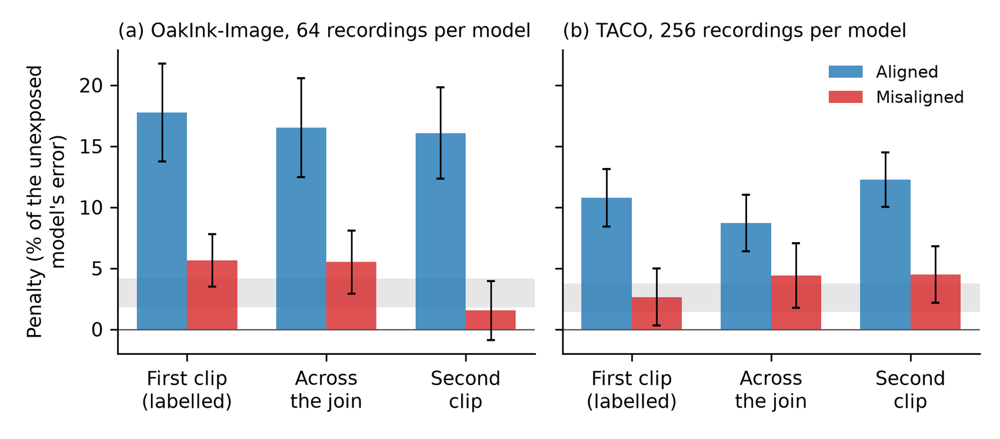
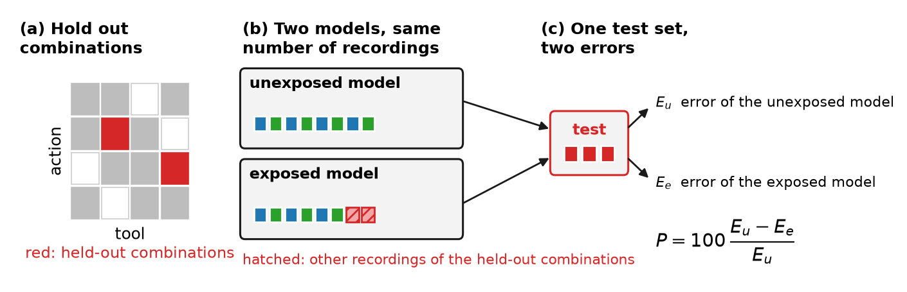
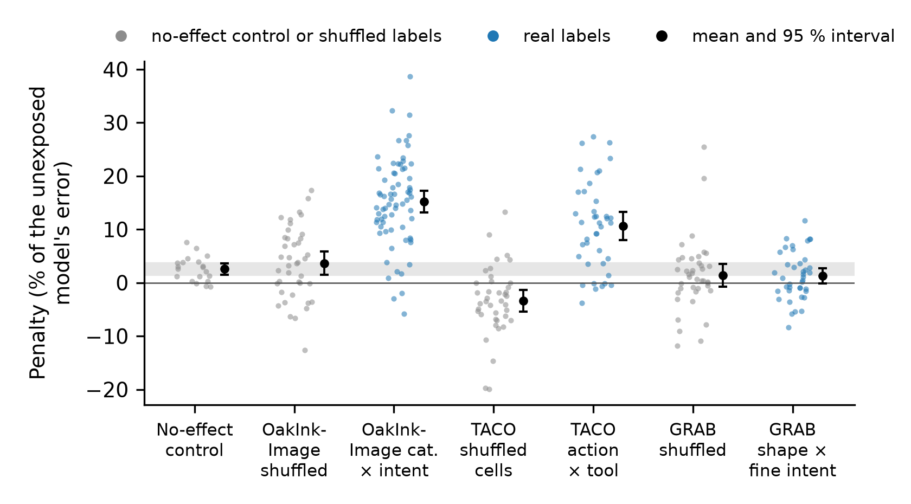

Machine-learning evaluation · hand-motion datasets, offline · Under review at Machine Learning (Springer), submitted November 2026
To test whether a motion model can handle combinations it never saw, you hold out some label combinations from training. But on recorded motion, a correct label often describes only part of its recording, so the held-out motion can stay in training under another label. When OakInk-Image clips are joined in pairs and only the label's coverage changes, the measured penalty drops from +17.03 % to +3.87 %. On TACO it drops from +11.14 % to +3.69 % with 256 recordings per model; a smaller first test with 64 was not significant.
Mu-Hua Wang · National Yang Ming Chiao Tung University · sole author
Schematic, not data. The six recordings are illustrative; the meter shows the measured means: OakInk-Image, 40 random splits per version, 64 recordings per model; no-effect control +2.96 %. The end card adds TACO (256 recordings per model, 40 splits).
The usual test holds out label combinations, say an action with a tool, while every action and every tool still appears in training. It then compares a model that never saw the held-out combinations with one that also saw other recordings of them; the share of test error this exposure removes is the penalty. The split is made on labels, but the model learns from motion. If a recording labelled “mug, drink” also contains the hand passing the mug, holding out “mug, pass” leaves that passing motion in training, and every label-level leak check still passes.
Pick a dataset and move the slider from full to half label coverage. Each dot is one random split.
full vs half label coverage, 40 splits, 64 recordings per model
same manipulation, 40 splits, 256 recordings per model
first-clip slices, OakInk-Image, bootstrap 95 % CI 65 % to 97 %
The last number is the one that surprised me. In the half-coverage version, test slices taken from the first clip still show the held-out combination, and the label still describes them, yet they lose most of their penalty too. So what changed is the training data, not what is scored.

Penalty by where the test slice lies, on OakInk-Image (left, 64 recordings per model) and TACO (right, 256). Means with 95 % intervals over 40 splits; grey bands are the no-effect control.

The penalty compares two models trained on the same number of recordings: one never sees the held-out combinations, the other also sees other recordings of them.
The model is a variational autoencoder of hand motion, and the penalty uses its reconstruction error. Two models trained on different data always differ a little, so a positive penalty alone proves nothing. Each result is repeated over 40 random splits and read against references whose answer is known in advance:
| Check | Result |
|---|---|
| OakInk-Image, shuffled vs real labels | +3.65 % vs +15.2 % |
| Combination effect planted into real GRAB poses | +13.15 % (vs +0.71 % without) |
| TACO action × tool, declared in advance | +10.6 % (95 % CI 8.0 to 13.3) |
| Same TACO test, single splits | −3.8 % to +27.4 % |

Each point is one random split. Real labels on OakInk-Image and TACO carry a penalty that shuffled labels do not; on GRAB no penalty above the control is detected at this power for either. A single split, as most benchmarks report, can land almost anywhere in this spread.
The first TACO test did not work. With 64 recordings per model the drop was +6.44 % → +3.67 %, p = 0.095: not significant, inconclusive at this power. I then declared a second test with 256 recordings, before training it, on the same splits; that one showed the drop (p = 4.1 × 10−6). Both are in the paper, not pooled.
Scope: offline datasets and one model class (reconstruction error of a variational autoencoder), with no robot experiment. The main evidence is OakInk-Image; on TACO the drop holds with 256 recordings per model across splits, but was not significant with 64 (p = 0.095), and with held-out cells treated as a sample its p-value is 0.029 to 0.074 depending on the model. Under the more conservative Nadeau–Bengio correction no full-versus-half-coverage comparison is significant (p = 0.14 and 0.25). Part of OakInk-Image's penalty comes from wrist translation; the leak into the unexposed model and the dilution of the exposed model's held-out recordings change together and are not separated.